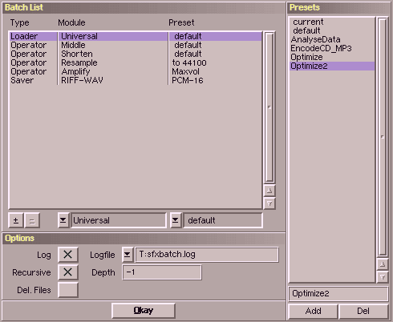

The batch processor allows you to apply a couple of operations (loading, processing, saving) to a whole directory of samples.
Therwith you can run a set of processes onto many and/or long files automatically.
Have a look at the presets for examples of operation.
| Range | Description |
|---|
| Batch List | This list always consists of one loader and one saver.
Inbetween you can add as many operators as you like.
Furthermore you can assign a preset to each operation.
|
| Options | Here you can choose, if you want SoundFX to log the execution to a file and specify to which file the log should go to.
Additionally you can ask SoundFX to recursively descend directories.
A depth of "-1" means "unlimited depth".
This will cause all files to be processed.
Finally you can choose that SoundFX deletes the source files after processing.
This saves space on you harddisk, but be sure to have the files backed up somewhere else.
|
| Presets | Like the preset-selection in the operator-windows,
you can save the setting made at the left side and quickly recall them.
|
|